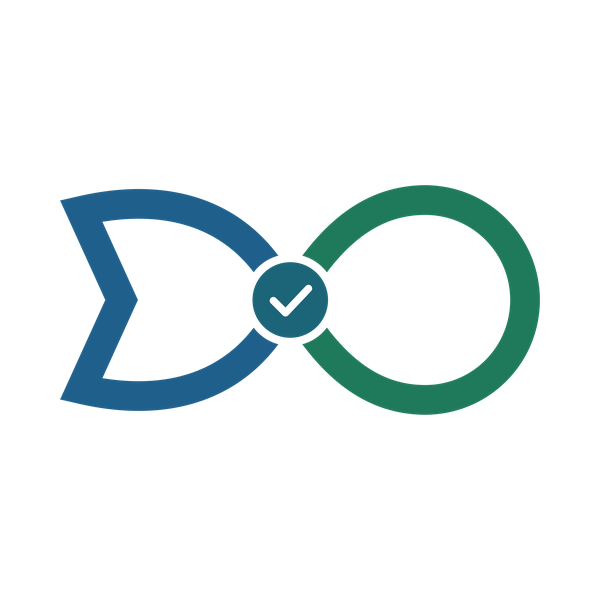

Deixar de receber emails sobre esta simulação?
Deixamos de lhe escrever sobre esta simulação. A simulação continua guardada na sua Área de Cliente e os avisos das encomendas que aprovar continuam a chegar.

Deixamos de lhe escrever sobre esta simulação. A simulação continua guardada na sua Área de Cliente e os avisos das encomendas que aprovar continuam a chegar.